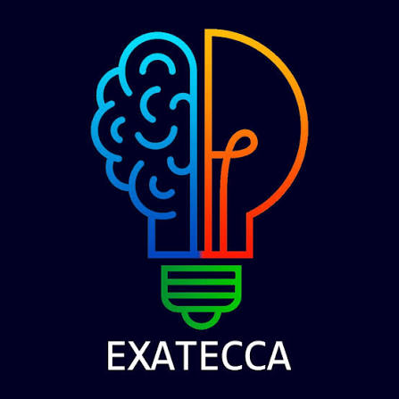
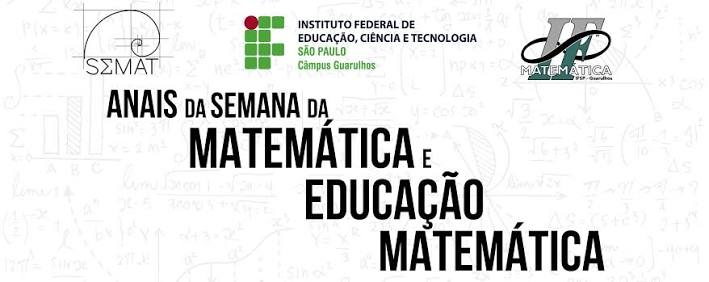

EXATECCA

Anais da Exposição Anual de Tecnologia, Educação, Cultura, Ciências e Arte do Instituto Federal de São Paulo - Câmpus Guarulhos (EXATECCA) - ISSN 2764-8443 — é uma publicação realizada pela Coordenação de Pesquisa e Inovação do Instituto Federal de Educação, Ciência e Tecnologia de São Paulo - Câmpus Guarulhos. Tem como objetivo apresentar os trabalhos científicos submetidos e aprovados para apresentação no evento.
A EXATECCA é organizada por estudantes e servidores do Câmpus Guarulhos e foi criada com o intuito de divulgar para a comunidade interna e externa o que é produzido na instituição, oferecendo espaço para a publicação de trabalhos científicos, artísticos e educativos.
Acessar Revista da EXATECCA 🔗Semana da Matemática e Educação Matemática (SEMAT)

Anais da Semana da Matemática e Educação Matemática - ISSN 2965-5056 — é uma publicação anual realizada pela equipe do Curso de Licenciatura em Matemática do IFSP Câmpus Guarulhos. A equipe é formada e renovada anualmente por professores, técnicos-administrativos e alunos que organizam a SEMAT.
O evento visa reunir a comunidade acadêmica e externa para apresentações de trabalhos aprovados pela Comissão de Avaliação e Editorial, compondo os anais oficiais de apresentação da Semana da Matemática.
Acessar Revista da SEMAT 🔗